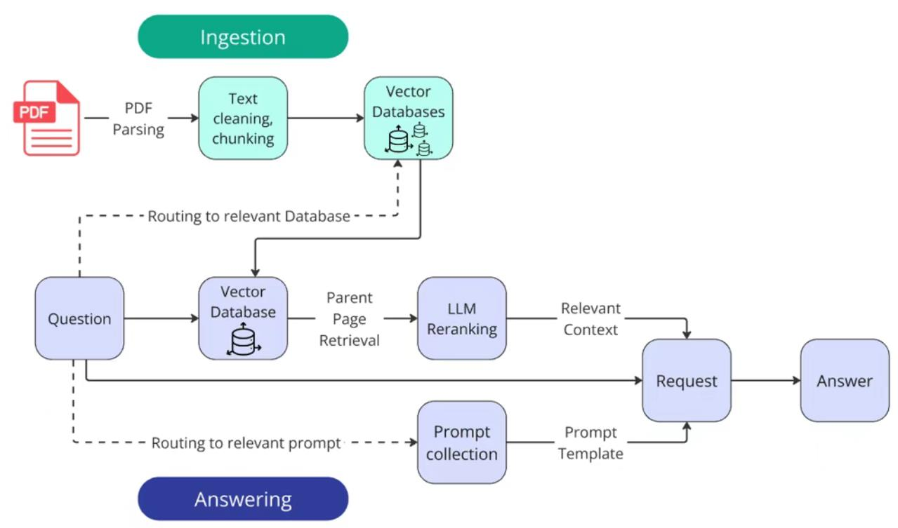

基于 PDF 年报的检索增强生成（RAG）系统 · 面向小白的逐行讲解 · 含 Mermaid 流程图
项目路径：src/ · 共 13 个核心模块 · 支持 OpenAI / DashScope(Qwen) / Gemini / IBM 多种模型
这是一个RAG 智能问答系统——用 AI 自动回答关于公司年报的专业问题。
假设你上传了 9 份关于中芯国际的 PDF 研报（券商报告、公司年报等），然后问：
| 你的问题 | 系统做什么 | 最终回答 |
|---|---|---|
| 「中芯国际在晶圆制造行业中的地位如何？」 | 从 PDF 中搜索相关内容 → LLM 总结 | 中芯国际是中国大陆最大的晶圆代工企业，全球排名第五… |
| 「中芯国际 2024 年营收是多少？」 | 精准定位财务数据页面 → 提取数值 | 578.9（亿元） |
| 类型 | 示例 | 答案格式 |
|---|---|---|
string 文本 | 「请总结中芯国际的主营业务」 | 一段完整文字 |
number 数值 | 「中芯国际 2024 年营收是多少？」 | 578.9 |
name 人名 | 「中芯国际的 CEO 是谁？」 | 「张三」 |
names 名单 | 「中芯国际有哪些新任高管？」 | ['张三', '李四'] |
boolean 布尔 | 「中芯国际是否宣布了分红政策变更？」 | true / false |
| 比较类 | 「A 公司和 B 公司哪家营收更高？」 | 「A 公司」 |
RAG = Retrieval-Augmented Generation（检索增强生成）
| 方式 | 优点 | 缺点 |
|---|---|---|
| 直接问 ChatGPT | 简单方便 | 可能编造数据、不知道你公司特定信息、有知识截止日期 |
| 用 RAG 系统 | 答案基于你提供的文档，可追溯来源 | 需要额外的检索步骤 |
下图直观展示了为什么需要 RAG：没有 RAG 时，LLM 可能编造答案或拒绝回答；有了 RAG，LLM 基于检索到的文档内容作答，答案更准确可靠。
下面这张图展示了系统从 PDF 到最终答案的完整流程。你可以把它想象成一条工厂流水线：
下图是本 RAG 系统的核心架构，清晰展示了从 PDF 到答案的完整数据流：

项目有 3 个入口文件，分别对应不同使用场景：
| 入口文件 | 用途 | 谁在用 |
|---|---|---|
| main.py | 命令行 CLI 入口，用 click 库构建，可以按步骤执行 |
开发者/批量处理 |
| app_streamlit.py | Web 图形界面，用 streamlit 构建 |
普通用户交互 |
| src/pipeline.py | 如果直接 python -m src.pipeline 运行，会按代码里写好的顺序执行 |
开发调试 |
# 1. 下载模型（首次使用需要）
python main.py download-models
# 2. 解析 PDF（并行处理，10 个进程）
python main.py parse-pdfs --parallel --max-workers 10
# 3. 处理报告（分块 + 建向量库）
python main.py process-reports --config no_ser_tab
# 4. 回答问题（使用 max 配置：含重排、父文档检索）
python main.py process-questions --config max项目实际有两套 PDF 解析方案，当前使用的是 MinerU 路径：
| Docling 路径 | MinerU 路径（当前在用） | |
|---|---|---|
| 代码文件 | src/pdf_parsing.py | src/pdf_mineru.py |
| 原理 | 本地 AI 模型解析 PDF | 调用 MinerU 云端 API 解析 |
| 输出格式 | 结构化 JSON（带页码、表格、图片） | Markdown 文本（full.md） |
| 是否有页码 | ✅ 有 | ❌ 无 |
| 是否需要 GPU | ✅ 需要（推荐 4090） | ❌ 不需要 |
| 是否需要网络 | ❌ 离线 | ✅ 需要 |
src/pdf_parsing.py 中的 PDFParser 类负责：
JsonReportProcessor 把解析结果组装成统一 JSON 格式parse_and_export_parallel() 用多进程并行处理多个 PDF{
"metainfo": {
"sha1": "stock_10001",
"company_name": "中芯国际"
},
"content": [ ← 按页组织
{
"page": 1,
"content": [
{ "type": "page_header", "text": "中芯国际2024年年度报告" },
{ "type": "text", "text": "中芯国际集成电路制造有限公司..." },
{ "type": "table", "table_id": 0 },
{ "type": "picture", "picture_id": 0 }
]
}
],
"tables": [ ← 所有表格
{ "table_id": 0, "page": 5, "markdown": "| 项目 | 金额 |...", "html": "<table>..." }
],
"pictures": [...] ← 所有图片
}src/parsed_reports_merging.py 中的 PageTextPreparation 类负责把结构化 JSON 转换成干净的 Markdown 文本。
# 标题（一级标题）## 标题（二级标题）### 段落（三级标题）- 列表项/zero 替换成 0，把 /percent 替换成 %输入（JSON 块）：
{"type": "section_header", "text": "主营业务分析"}
{"type": "paragraph", "text": "公司2024年实现营业收入578.9亿元"}
{"type": "table", "table_id": 0}
↓ PageTextPreparation 处理 ↓
输出（Markdown）：
## 主营业务分析
### 公司2024年实现营业收入578.9亿元
| 项目 | 2024年 | 2023年 |
|----------|---------|---------|
| 营业收入 | 578.9亿 | 452.5亿 |src/text_splitter.py 中的 TextSplitter 类负责把长文本切成小块。
split_markdown_file() 方法：
lines 字段，没有 page 字段）。
这导致后面的「页码引用」和「父文档检索」功能无法正常工作。
{
"metainfo": { "sha1": "stock_10001", "company_name": "中芯国际" },
"content": {
"chunks": [
{ "lines": [1, 30], "text": "# 中芯国际2024年年度报告\n\n## 公司简介\n..." },
{ "lines": [25, 55], "text": "## 公司简介\n...（与前一个块有重叠）..." },
{ "lines": [50, 80], "text": "...（下一个块）..." }
]
}
}src/ingestion.py 负责两个关键任务：创建向量库和 BM25 索引。
[0.23, -0.45, 0.78, ...]（1536 个数字）。
两段语义相近的文字，它们的向量在空间中距离更近。这就是「语义搜索」的基础。
| 类名 | 索引方式 | 搜索原理 | 适用场景 |
|---|---|---|---|
VectorDBIngestor |
FAISS 向量索引 | 语义相似度（余弦距离） | 理解含义的搜索，如「公司经营情况」 |
BM25Ingestor |
BM25 稀疏索引 | 关键词匹配（TF-IDF 变体） | 精确关键词搜索，如「营业收入 578.9亿」 |
# src/ingestion.py - VectorDBIngestor 核心逻辑
def _process_report(self, report: dict):
# 1. 取出所有文本块
text_chunks = [chunk['text'] for chunk in report['content']['chunks']]
# 2. 截断超长文本（最大 2048 字符）
text_chunks = [t[:2048] for t in text_chunks if len(t) > 0]
# 3. 批量获取嵌入向量（每批 25 条）
embeddings = self._get_embeddings(text_chunks)
# 4. 创建 FAISS 向量索引（内积 = 余弦相似度）
index = faiss.IndexFlatIP(dimension) # IP = Inner Product
index.add(embeddings_array)
return index当用户提问时，src/questions_processing.py 的 QuestionsProcessor 开始工作。
项目有 3 种检索器，形成递进关系：
| 检索器 | 机制 | 什么时候用 |
|---|---|---|
VectorRetriever |
把问题转成向量，在 FAISS 中找最相近的 chunk | 基础配置、单公司问题 |
BM25Retriever |
把问题分词，用 BM25 算法匹配关键词 | 需要精确关键词匹配时 |
HybridRetriever |
向量检索 top-28 → LLM 重排 → 取 top-6 | 启用 llm_reranking 时 |
# src/retrieval.py - VectorRetriever.retrieve_by_company_name()
# 1. 找到对应公司的向量库和文档
target_report = <找到 company_name 匹配的报告>
vector_db = target_report["vector_db"] # FAISS 索引
document = target_report["document"] # 分块数据
# 2. 把用户问题转换成向量
embedding = self._get_embedding(query) # 调用 DashScope API
embedding_array = np.array(embedding).reshape(1, -1)
# 3. 在 FAISS 中搜索 top-N 最相近的 chunk
distances, indices = vector_db.search(embedding_array, k=top_n)
# 4. 返回结果（包含分数、页码、文本）
for distance, index in zip(distances[0], indices[0]):
chunk = chunks[index]
result = { "distance": distance, "page": chunk["page"], "text": chunk["text"] }_extract_companies_from_subset() 方法会读取 subset.csv 中的所有公司名，按长度从长到短排序，再在问题文本中匹配：
# 例如 subset.csv 中有：
# sha1,file_name,company_name
# stock_10001,中芯国际年报,中芯国际
# 用户提问：「中芯国际在晶圆制造行业中的地位如何？」
# → 匹配到 "中芯国际" → extracted_companies = ["中芯国际"]src/api_requests.py 是整个系统与 LLM 交互的核心，支持 4 种 API 提供商。
| Provider | 处理类 | 默认模型 | 需要什么 Key |
|---|---|---|---|
dashscope | BaseDashscopeProcessor | qwen-turbo | 阿里云 DashScope API Key |
openai | BaseOpenaiProcessor | gpt-4o-2024-08-06 | OpenAI API Key |
gemini | BaseGeminiProcessor | gemini-2.0-flash-001 | Google API Key |
ibm | BaseIBMAPIProcessor | llama-3-3-70b-instruct | IBM API Key |
# src/api_requests.py - APIProcessor 类
class APIProcessor:
def __init__(self, provider="dashscope"):
if provider == "openai":
self.processor = BaseOpenaiProcessor()
elif provider == "ibm":
self.processor = BaseIBMAPIProcessor()
elif provider == "gemini":
self.processor = BaseGeminiProcessor()
elif provider == "dashscope":
self.processor = BaseDashscopeProcessor()
def send_message(self, system_content, human_content, ...):
# 不管底层是哪个提供商，统一调用 send_message
return self.processor.send_message(...)因为 LLM 有时候返回的不是合法 JSON（特别是 DashScope 的 Qwen），所以 get_answer_from_rag_context() 里有一层兜底：
# src/api_requests.py 第 426-461 行
if not isinstance(answer_dict, dict) or 'step_by_step_analysis' not in answer_dict:
# 兜底：尝试从 final_answer 字符串中解析 JSON
# 如果还不行，就用空值填充，返回 N/A
answer_dict = {
"step_by_step_analysis": "",
"reasoning_summary": "",
"relevant_pages": [],
"final_answer": "N/A"
}当用户同时问多家公司时，系统会启动「比较模式」：
# src/questions_processing.py - process_comparative_question()
# 第一步：把比较问题拆成每家公司的独立问题
rephrased_questions = self.openai_processor.get_rephrased_questions(
original_question="哪家公司营收更高？",
companies=["中芯国际", "台积电"]
)
# → {"中芯国际": "中芯国际2024年营收是多少？",
# "台积电": "台积电2024年营收是多少？"}
# 第二步：并行处理每家公司的子问题
with ThreadPoolExecutor() as executor:
# 两家公司同时检索 + LLM 回答
...
# 第三步：汇总各公司结果，生成最终比较答案
comparative_answer = self.openai_processor.get_answer_from_rag_context(
question=original_question,
rag_context=individual_answers, # {"中芯国际": 578.9, "台积电": 2100}
schema="comparative"
)src/prompts.py 定义了这个系统的「灵魂」——9 个 Prompt 类。LLM 的输出质量全靠这些 Prompt。
| # | 类名 | 用途 | final_answer 类型 |
|---|---|---|---|
| 1 | RephrasedQuestionsPrompt | 比较问题拆成单公司问题 | [{公司名, 问题}] |
| 2 | AnswerWithRAGContextNamePrompt | 人名/实体提取 | str | N/A |
| 3 | AnswerWithRAGContextNumberPrompt | 数值提取（最复杂） | float | int | N/A |
| 4 | AnswerWithRAGContextBooleanPrompt | 是非判断 | bool |
| 5 | AnswerWithRAGContextNamesPrompt | 名单提取 | List[str] | N/A |
| 6 | AnswerWithRAGContextStringPrompt | 文本总结 | str |
| 7 | ComparativeAnswerPrompt | 比较结论汇总 | str | N/A |
| 8 | AnswerSchemaFixPrompt | JSON 格式修复 | JSON |
| 9 | RerankingPrompt | 检索片段重排序 | 相关性分数 0~1 |
数值类问题最容易出错，所以在 AnswerWithRAGContextNumberPrompt 中嵌入了7 条严格规则：
| 原文中出现的值 | 正确答案 | 规则 |
|---|---|---|
58,3% | 58.3 | 逗号→小数点，移除% |
(2,124,837) CHF | -2124837 | 括号=负数，移除分隔符 |
4970,5（千美元） | 4970500 | 千为单位→乘1000 |
780000 USD（问题要 EUR） | N/A | 币种不匹配 |
每个 Prompt 的输出通过四层约束确保质量：
src/pipeline.py 中的 PipelineConfig 管理所有数据路径：
root_path = Path("data/stock_data")
# 自动推导出以下路径：
root_path/pdf_reports/ ← PDF 原始文件
root_path/subset.csv ← 公司元数据映射
root_path/questions.json ← 问题列表
root_path/debug_data/ ← 调试中间产物
root_path/databases/
├── chunked_reports/ ← 分块后的 JSON
├── vector_dbs/ ← FAISS 向量库
└── bm25_dbs/ ← BM25 索引RunConfig 控制运行时行为：
| 参数 | 默认值 | 作用 |
|---|---|---|
use_serialized_tables | False | 是否使用 LLM 序列化表格 |
parent_document_retrieval | False | 返回完整页面而非分块（需 Docling 路径） |
llm_reranking | False | 是否用 LLM 重排检索结果 |
llm_reranking_sample_size | 30 | 首轮向量检索的候选数 |
top_n_retrieval | 10 | 最终返回几个最相关 chunk |
parallel_requests | 1 | 并行处理问题数（注意 API 限流） |
api_provider | "dashscope" | API 提供商 |
answering_model | "qwen-turbo" | 回答问题的模型 |
| 配置名 | 特点 | 适用场景 |
|---|---|---|
base_config | 纯向量检索、10 路并行 | 快速验证 |
parent_document_retrieval_config | 父文档检索、gpt-4o | 高质量回答（需 Docling） |
max_config | LLM 重排 + 父文档检索、qwen-turbo | 当前默认配置 |
app_streamlit.py 提供了图形界面：
# 启动方式
streamlit run app_streamlit.py
# 界面布局：
# ┌──────────────┬──────────────────────────────┐
# │ 左侧边栏 │ 右侧主内容区 │
# │ │ │
# │ 输入问题 │ 分步推理： │
# │ ┌────────┐ │ "1. 问题询问中芯国际..." │
# │ │ │ │ │
# │ └────────┘ │ 推理摘要： │
# │ [生成答案] │ "年报第5页直接给出营收数据" │
# │ │ │
# │ │ 相关页面：[5, 12] │
# │ │ │
# │ │ 最终答案： │
# │ │ 578.9亿元 │
# └──────────────┴──────────────────────────────┘下面这张图展示了所有模块之间的调用依赖关系。箭头表示「A import B」或「A 调用 B」。
| 文件 | 核心类/函数 | 一句话功能 |
|---|---|---|
| main.py | cli() | 命令行入口，5 个子命令 |
| app_streamlit.py | - | Web UI，单问题即时问答 |
| src/pipeline.py | Pipeline | 串联所有步骤的总控制器 |
| src/pdf_parsing.py | PDFParser | Docling 本地 PDF 解析 |
| src/pdf_mineru.py | get_task_id() | MinerU 云端 PDF 解析 |
| src/parsed_reports_merging.py | PageTextPreparation | JSON → Markdown 规整 |
| src/text_splitter.py | TextSplitter | 长文本分块（30行/块） |
| src/ingestion.py | VectorDBIngestor | 向量化 + FAISS 建库 |
| src/retrieval.py | VectorRetriever | 向量检索（核心检索逻辑） |
| src/reranking.py | LLMReranker | LLM 重排序检索结果 |
| src/questions_processing.py | QuestionsProcessor | 问题处理、检索调度、答案生成 |
| src/api_requests.py | APIProcessor | 多 Provider LLM 统一调用 |
| src/prompts.py | 9 个 Prompt 类 | LLM 提示词和输出约束 |
| src/tables_serialization.py | TableSerializer | 表格内容 LLM 序列化 |
📄 文档生成时间：2026-06-25 | 基于项目 src/ 全部 13 个模块代码审查